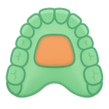

FlexReg — ลงทะเบียนภาพสแกนสองชุดโดยวาดบริเวณที่คงที่ด้วยตนเอง
FlexReg ลงทะเบียนภาพ (registration) ภาพสแกนในช่องปาก (IOS) สองชุดของผู้ป่วยคนเดียวกันที่ถ่าย ต่างช่วงเวลา แทนที่จะให้โครงข่ายประสาทเทียมเดาว่าบริเวณใดไม่ได้เคลื่อนที่ คุณเป็นผู้กำหนดบริเวณนั้นเองด้วยเมาส์ บนขากรรไกรบนหรือขากรรไกรล่าง
ใช้เมื่อใด
ใช้ FlexReg เมื่อ AREG_IOS — ซึ่งเป็นรุ่นอัตโนมัติ — หาบริเวณที่เหมาะสำหรับลงทะเบียนภาพ เองไม่ได้ เช่น ขากรรไกรที่ไม่มีฟันบางส่วน เพดานปากที่มีรูปร่างผิดปกติ หรือ เพียงแค่ต้องการควบคุมเองว่าส่วนใดนับเป็นจุดอ้างอิงคงที่ FlexReg คือรุ่น "วาดเอง" ของการลงทะเบียนภาพแบบเดียวกัน เครื่องมือทั้งสองสร้าง และอ่าน landmark ชนิดเดียวกัน จึงเริ่มในเครื่องมือหนึ่งแล้วทำต่อในอีก เครื่องมือหนึ่งได้
บนขากรรไกรบน บริเวณนี้ยึดอยู่กับเพดานปาก: เลือกฟันอ้างอิง สี่ซี่ แล้ว FlexReg จะสร้าง patch รูปผีเสื้อรอบฟันเหล่านั้น หรือจะวาด เส้นขอบด้วยเมาส์โดยตรงก็ได้ บนขากรรไกรล่าง ซึ่งไม่มีเพดานปากที่ ทำหน้าที่เป็นแผ่นคงที่ FlexReg จะอาศัยเส้น mucogingival แทน — ซึ่งวางให้ อัตโนมัติ — แล้วขยายให้หนาขึ้นเป็นแถบตามแนวเหงือก
สิ่งที่ต้องใช้ สิ่งที่จะได้
สิ่งที่ต้องเตรียม
- ภาพสแกนสองชุดของผู้ป่วยคนเดียวกัน ในรูปแบบ
.vtkหรือ.stl(.stlจะถูกแปลงให้อัตโนมัติ) - ภาพสแกน "moving" (ชุดที่ใหม่กว่า) และภาพสแกน "fixed" (ชุดอ้างอิง)
- ฟันที่ระบุแล้วทีละซี่ — หากยังไม่ได้ระบุ FlexReg จะทำการแบ่งส่วน (segmentation) ให้เอง แต่ต้องรอนานขึ้นในรอบแรก
- การ์ดจอ (GPU) — จำเป็นสำหรับการสร้าง patch
สิ่งที่ได้ออกมา
- ภาพสแกนที่ลงทะเบียนแล้วในรูปแบบ
.vtkบันทึกไว้ข้างไฟล์ต้นฉบับ - เมทริกซ์การแปลง (
.tfm) ที่เครื่องมืออื่นใน คลังโค้ดนำไปใช้ต่อได้ - ภาพตัวอย่างที่แสดงในฉากก่อนบันทึกสิ่งใด
ขั้นตอน
- โหลดภาพสแกนทั้งสองชุด ระบุว่าชุดใดเป็น moving (ชุดที่จะถูก จัดแนว) และชุดใดเป็น fixed ที่ใช้อ้างอิง
- ตรวจสอบการระบุฟัน หากขากรรไกรยังไม่มีอาร์เรย์ segmentation FlexReg จะคำนวณให้เองในครั้งแรก — ให้คาดว่า จะใช้เวลาเพิ่มขึ้นเฉพาะในรอบนั้น
- สร้างบริเวณที่คงที่ บนขากรรไกรบน เลือกฟันอ้างอิงสี่ซี่ แล้วปรับรูปร่าง patch รูปผีเสื้อด้วยแถบเลื่อน (ตำแหน่ง ความยาว ความกว้าง) หรือ วาดเส้นขอบเองอย่างอิสระ บนขากรรไกรล่าง ให้ FlexReg วาง landmark mucogingival แล้วปรับความสูงของแถบรอบจุดเหล่านั้น
- ดูตัวอย่าง ปุ่มดูตัวอย่างจะรันการลงทะเบียนภาพลงใน โฟลเดอร์ชั่วคราว และแสดงผลในฉากโดยไม่บันทึกอะไร — ใช้ปุ่มนี้ เพื่อตัดสินว่าบริเวณที่เลือกให้การจัดแนวที่ดีหรือไม่
- รันการลงทะเบียนภาพขั้นสุดท้าย เมื่อพอใจแล้ว และเลือก ตำแหน่งที่จะเขียนผลลัพธ์
ใช้เวลานานเท่าใด
การสร้าง patch และการรันการลงทะเบียนภาพใช้เวลาไม่กี่วินาทีต่อคู่ภาพสแกน บน GPU หลังวาดบริเวณเสร็จแล้ว ขั้นที่ช้าคือการแบ่งส่วนตัวฟันใน รอบแรกของขากรรไกรที่ยังไม่ได้ระบุฟัน — การรอนี้เกิดครั้งเดียวต่อภาพสแกนและไม่ เกิดซ้ำอีก
หากเกิดปัญหา
การสร้าง patch และการรันการลงทะเบียนภาพทำงานได้เฉพาะกับ GPU ที่รองรับ หากไม่มี ขั้นเหล่านี้จะล้มเหลวทันที — นี่ไม่ใช่เรื่องประสิทธิภาพ แต่เป็น ข้อกำหนดบังคับของโมดูล
FlexReg จัดแนวเฉพาะบริเวณที่คุณกำหนดไว้ — ไม่ใช่ทั้งขากรรไกร หากผลลัพธ์ ดูคลาดเคลื่อนในส่วนที่ห่างจากบริเวณนั้น ถือเป็นเรื่องที่คาดไว้: ส่วนที่เหลือของเมชเพียงเคลื่อนตาม การเคลื่อนที่ที่คำนวณได้บน patch ไม่ได้ถูกลงทะเบียนแยกต่างหาก
บนขากรรไกรล่าง จุดบางจุดที่วางอัตโนมัติอาจน่าเชื่อถือน้อยกว่า จุดอื่นอย่างเห็นได้ชัด (ความคลาดเคลื่อนที่วัดได้เพิ่มจากประมาณ 1 mm เป็นมากกว่า 4 mm ใน กรณีเหล่านั้น) FlexReg ตัดจุดเหล่านี้ออกโดยค่าเริ่มต้นและเติมช่องว่างด้วยการประมาณค่าในช่วง — ดังนั้น จุดหนึ่งอาจดูเหมือน "หายไป" แม้ว่าจะตรวจพบแล้วก็ตาม
ให้เริ่มจากไฟล์ .vtk หรือ .stl ที่ส่งออกไว้แล้ว ตัว
การลงทะเบียนภาพไม่อ่าน DICOM
ทั้งการวาดบริเวณที่คงที่และการแบ่งส่วนตัวฟันจะเขียนทับไฟล์ อินพุต ไม่ใช่สำเนา ควรสำรองภาพสแกนต้นฉบับไว้เสมอก่อนเริ่ม
เส้นขอบของ patch รูปผีเสื้อถูกกำหนดโดยการแผ่ขากรรไกรลงเป็น ภาพฉาย บนขากรรไกรที่เอียงมาก ภาพฉายนั้นอาจเก็บจุดที่ จริง ๆ แล้วอยู่ห่างออกไปในแนวความสูง ทำให้ได้ patch ที่ล้นเกินบริเวณที่ตั้งใจไว้ — ตรวจดูภาพตัวอย่างก่อนยืนยัน
ขั้นต่อไป
ภาพสแกนที่ลงทะเบียนแล้วและเมทริกซ์การแปลงพร้อมใช้งานโดยตรงใน AREG_IOS และเครื่องมืออื่นในคลังโค้ดที่ซ้อนภาพสแกนข้ามช่วงเวลา เช่นเดียวกับการลงทะเบียนภาพอัตโนมัติทุกแบบ การตรวจดูด้วยตาอย่างรวดเร็วก่อนนำไปใช้ วัดค่าก็ยังเป็นแนวปฏิบัติที่ดี
อ่านเพิ่มเติม
ไม่มีงานตีพิมพ์ใดอธิบาย FlexReg ทั้งบริเวณที่ผู้ใช้วาดเอง และการลงทะเบียนภาพที่ตามมา เอกสารด้านล่างอธิบายแนวทาง ไม่ใช่ตัวโมดูล
เกี่ยวกับวิธีการ
- Hutin et al., ShapeMI 2023 — AReg IOS: Automatic Registration on IntraOralScans. ส่วนที่ได้รับการตีพิมพ์ของโมดูลกลุ่มนี้ เครือข่ายประสาทเทียมค้นหาบริเวณที่มั่นคงของเพดานปากได้เอง ขณะที่ FlexReg ให้ผู้ใช้วาดบริเวณนั้นเอง
- Vasilakos et al., Scientific Reports 2017 — Assessment of different techniques for 3D superimposition of serial digital maxillary dental casts on palatal structures. เปรียบเทียบบริเวณเพดานปากที่ใช้เป็นจุดอ้างอิงได้ และความสามารถในการทำซ้ำของแต่ละบริเวณ — มีประโยชน์เมื่อต้องตัดสินใจว่าจะวาดตรงไหน
- Garib et al., Orthod Craniofac Res 2019 — Superimposition of maxillary digital models using the palatal rugae: does ageing affect the reliability?. รอยย่นเพดานปากในฐานะ landmark และผลของการเจริญเติบโตต่อความมั่นคงของรอยย่น — ควรอ่านก่อนทำการลงทะเบียนภาพในผู้ป่วยที่ยังเจริญเติบโต
บรรณานุกรมทั้งหมดของเครื่องมือนี้ — ทั้งสิ่งที่พบ และสิ่งที่ค้นแล้วไม่พบ — อยู่ในหน้าแหล่งอ้างอิง
ทำงานจริงอย่างไร → หน้าแอตลาส: การสร้าง patch เชิงเรขาคณิต บทบาทของโครงข่าย สนับสนุนสองตัว ICP ที่ทำการลงทะเบียนภาพ และข้อควรระวังที่พบ ในโค้ด